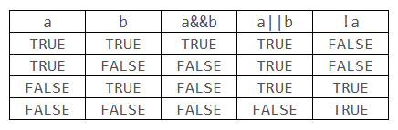

标识符就是Java编程中给变量、类、方法取的名字，以便我们使用。既然是名字，自然就有命名的规则了。
Java标识符命名规则：
例如：
public class Demo01 {
public static void main(String[] args) {
int a = 3;
int _123 = 3;
int $12aa = 3;
// int 1a = 3; //不能用数字开头
// int a# = 3; //不能包含#这样的特殊字符
// int int = 3; //不能使用关键字
}
}
为了规范Java程序代码：
Java关键字：
1. 算术运算符
例如：
public class Demo02 {
public static void main(String[] args) {
int a = 6;
int b = 2;
System.out.println(""
+ (a+b) + "\n" //print: 8
+ (a-b) + "\n" //print: 4
+ (a*b) + "\n" //print: 12
+ (a/b) + "\n" //print: 3
+ (a%b) + "\n" //print: 0
+ (++a) + "\n" //print: 7
+ (a++) + "\n" //print: 7
+ (--b) + "\n" //print: 1
+ (b--) + "\n"); //print: 1
}
}
2. 赋值运算符
例如：
public class Demo03 {
public static void main(String[] args) {
int a = 6;
int b = 2;
int c = a + b;
System.out.println((c+=1) +"\n" //print: 9
+ (c-=1) +"\n" //print: 8
+ (c*=2) +"\n" //print: 16
+ (c/=2) +"\n"); //print: 8
}
}
在Java中，赋值“=”和等于“==”是两个不同的的运算符。
3. 关系运算符
关系运算符用来比较运算，返回的结果是布尔类型数据，只有true和false。
例如：
public class Demo04 {
public static void main(String[] args) {
System.out.println(""
+ (3>2) +"\n" //print: true
+ (3<2) +"\n" //print: false
+ (3>=3) +"\n" //print: true
+ (3<=3) +"\n" //print: true
+ (4==3) +"\n" //print: false
+ (3!=4) +"\n"); //print: true
}
}
4. 逻辑运算符
逻辑运算符只能操作布尔类型的数据，当&&左边的为false时，直接返回false，将不会执行右边的表达式，同样，当||左边为true时，直接返回false。
逻辑运算真值表：

例如：
public class Demo05 {
public static void main(String[] args) {
System.out.println(""
+ ((3>2)&&(3<2)) +"\n" //print: false
+ ((3<2)||(3>2)) +"\n" //print: true
+ !(3>=3) +"\n"); //print: false
}
}
5. 条件运算符
例如：
public class Demo06 {
public static void main(String[] args) {
int a = 5;
int b = 4;
int max = a > b ? a : b;
System.out.println(max); //print: 5
}
}
条件运算符中唯一的三目运算符，在使用三目运算符时，会自动转换数据类型。
6. 位运算符
例如：
public class Demo07 {
public static void main(String[] args) {
int a = 0xff;
int b = 0;
int c = a&b;
System.out.println(""
+ (a&b) +"\n" //print: 0
+ (a|b) +"\n" //print: 255
+ (~a) +"\n" //print: -256
+ (a^b) +"\n" //print: 255
+ (a>>2) +"\n" //print: 63
+ (a<<2) +"\n" //print: 1020
+ (a>>>2) +"\n"); //print: 63
System.out.println(""
+ Integer.toBinaryString(a&b) +"\n" //print: 0
+ Integer.toBinaryString(a|b) +"\n" //print: 11111111
+ Integer.toBinaryString(~a) +"\n" //print: 11111111111111111111111100000000
+ Integer.toBinaryString(a^b) +"\n" //print: 11111111
+ Integer.toBinaryString(a>>2) +"\n" //print: 111111
+ Integer.toBinaryString(a<<2) +"\n" //print: 1111111100
+ Integer.toBinaryString(a>>>2) +"\n"); //print: 111111
}
}
按位与（&）
形式：a&b
功能：将a与b按照对应的二进制位一一进行“与”运算。
示例：65&66的计算过程为：
65 0100 0001
66 0100 0010
& ---------
0100 0000
主要用途：
按位或（|）
形式：a|b
功能：将a和b按照对应的二进制位一一进行“或”运算。
示例：65|66的计算过程为：
65 0100 0001
66 0100 0010
| ---------
0100 0011
主要用途：按位或常用来将一个数的某些位变为1。
按位取反（~）
形式：~a
功能：将a的各个二进制位取反
示例：~13的计算过程为~13 = ~(00001101) = 11110010（注：本例只取出了13的最低的一个字节，即低8位。下面都是如此。）
按位异或（^）
形式：a^b
功能：将a和b按照对应的二进制拉一一进行“异或”运算，只有对应的二进制位不同时，该位的结果才为1，否则为0。
示例：65^66的计算过程为：
65 0100 0001
66 0100 0010
^ ---------
0000 0011
主要用途：使指定位翻转。即由1变为0，由0变为1。如：要使11001101的低4位翻转，将其与00001111按位异或即可。
左移（«）
形式：a«n
功能：将a的各二进制位向左移动n位，右端补0，左端移出的部分直接丢弃。
示例：13«4的计算过程为13«4 = (00001101)«4 = 11010000。
特殊用法：左移可以扩大原数的倍数，左移1位，相当于乘以2。
右移（»）
形式：a»n
功能：将a的各二进制位向右移动n位，右端移出的部分直接丢弃。当移位的操作数为无符号或正整数时左端补0，负整数时左端补1。
示例：13»2的计算过程为13»2 = (00001101)»2 = 00000011。
特殊用法：左移可以缩小原数的倍数，右移1位，相当于除以2。
不用刻意去记住运算符的优先级，可以用小括号来组织代码，这样可读性更高。